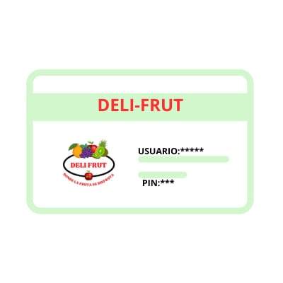
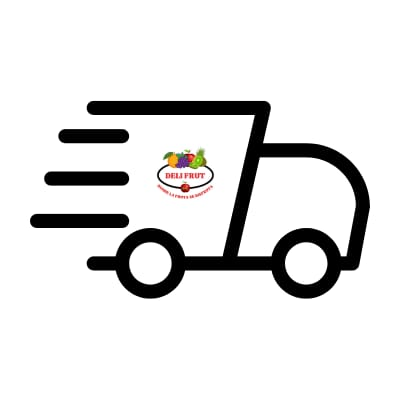

Tenemos para ti una oferta especial,puedes adquirir nuestra "FRUTI-TARJET" con ella podras obtener acceso a nuestras bebidas especialmente secretas y recibiras ofertas ineditas
Podemos hacer entrega a domicilio de tus bebidas y bocadillos favoritos de manera rapida y dencilla
¿Necesitas bocadillos para tu celebracion? No te preocupes "Deli-Frut" tiene un exelente servicio de catering donde tu puedes elegir desde tus toppings favoritos hasta una receta especial solo para ti

Nuestro negocio es uno de los mas reconocidos ya que siempre procuramos la calidad de todos nuestros productos para poder entregarte siempre lo mejor dentro de un espacio agradable donde seras atendido siempre de la mejor forma posible
Nuestros "Deli-bocadillos" son bocadillos frutales y son una opción deliciosa y saludable para satisfacer antojos de algo dulce. Se componen de una variedad de frutas frescas, cortadas en trozos o rebanadas, y pueden incluir una mezcla de diversas,contamos con diversos recetas de "Deli-bocadillos" para que elijas tu favorita .
Nuestro apertado de "Fruti-bebidas" consiste en ofrecerte una exquisita variedad de bebidas frutales frescas y saludables, elaboradas con ingredientes de la más alta calidad. Contamos desde clásicas opciones como jugo de naranja recién exprimido hasta combinaciones innovadoras que solo Deli-frut tiene para ti